Passfotos
ab 25 €
Termin buchenPortraits, Familien- und Businessfotos von Fotografenmeisterin Katrin Bernhard. Bilder, die zeigen, wie Sie wirklich sind.
Telefon: 08165 / 80 97 97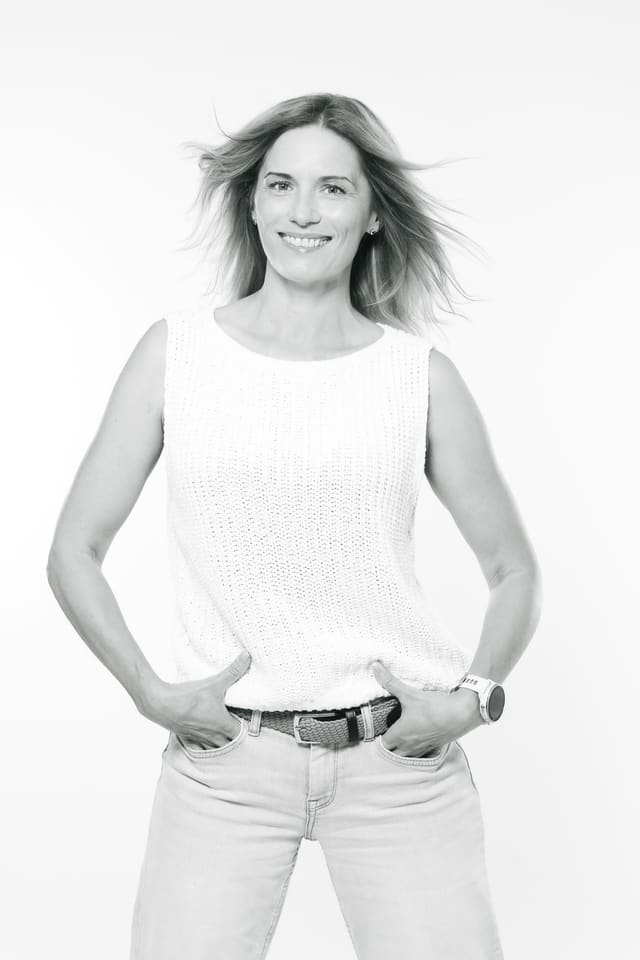
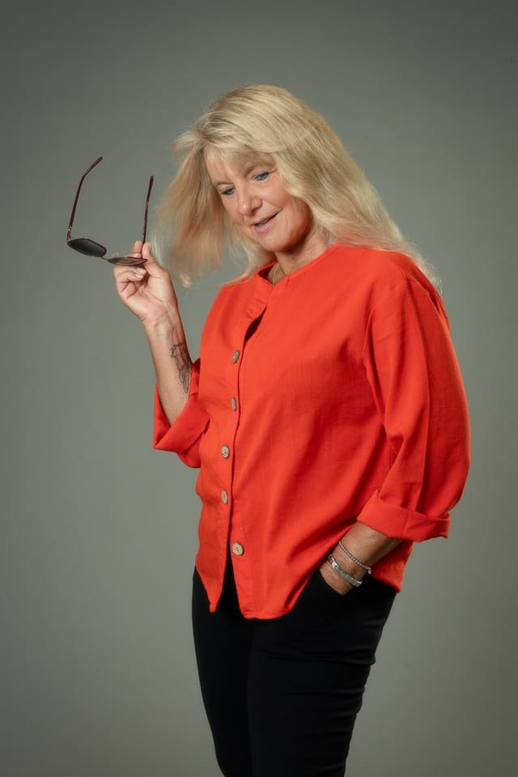
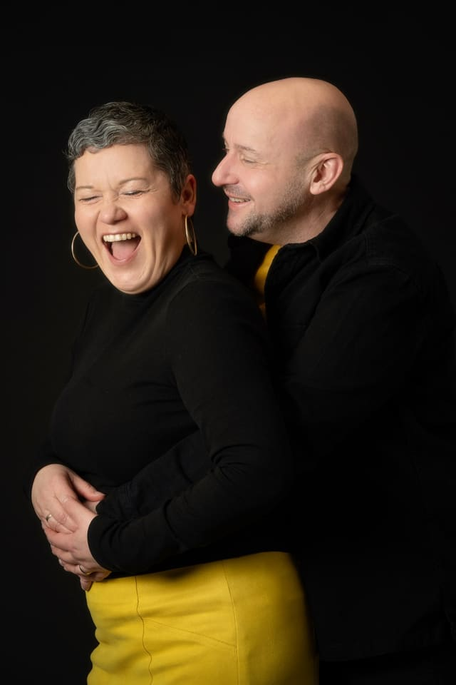
Katrin Bernhard,
Fotografenmeisterin
Ich fotografiere seit über 35 Jahren und habe ein feines Gespür für Menschen und ihre Vierbeiner entwickelt. In kürzester Zeit erkenne ich, was Sie gerade brauchen: Bei Kindern, ob sie Action oder Ruhe möchten, im Business-Bereich, ob Sie Anleitung, eine klare Position oder einfach Zeit zum Ankommen brauchen.
Jeder tickt vor der Kamera anders, und genau darauf stelle ich mich mit Empathie, Feingefühl und Herz ein. So fühlen Sie sich wohl, die Bilder zeigen Sie, wie Sie wirklich sind, und am Ende sagen Sie: „Das hat sogar richtig Spaß gemacht.“
Ob kleines Shooting oder großes, umfangreiches Shooting: Sie sagen mir, was Sie sich vorstellen, und wir gestalten es gemeinsam. Fotografiert wird auch gern draußen.
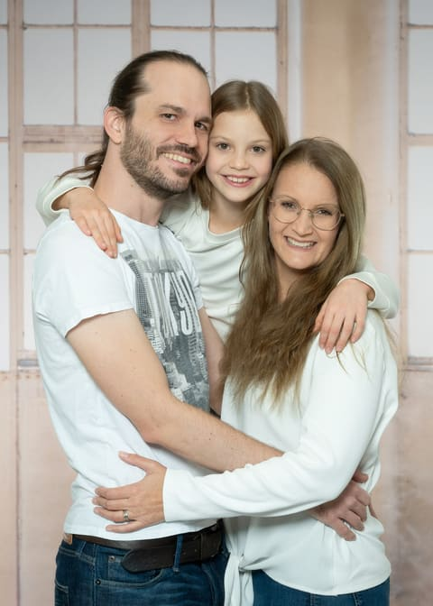
Hier steht der Spaß im Vordergrund. Die Kinder dürfen sie selbst sein, und genau so entstehen natürliche, lebendige Bilder.
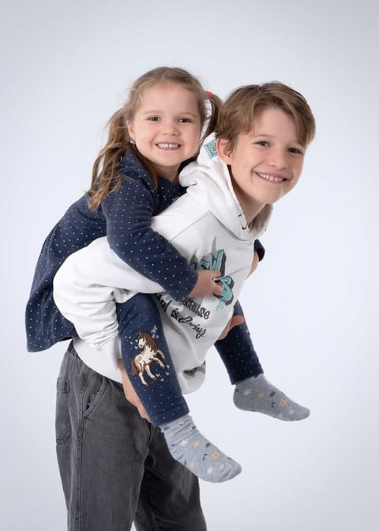
Für werdende Mamas, die diese besondere Zeit festhalten möchten.
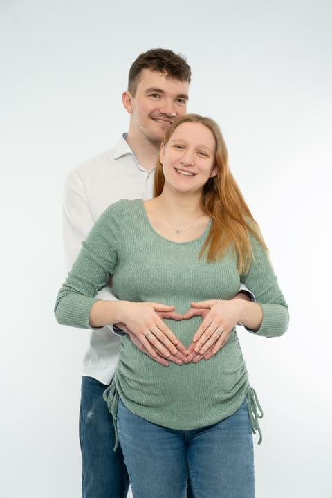
Für Paare, die echte Emotionen und schöne gemeinsame Erinnerungen festhalten möchten.
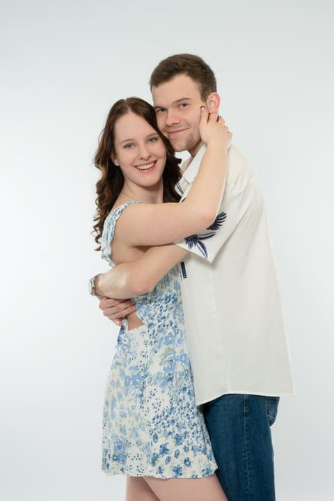
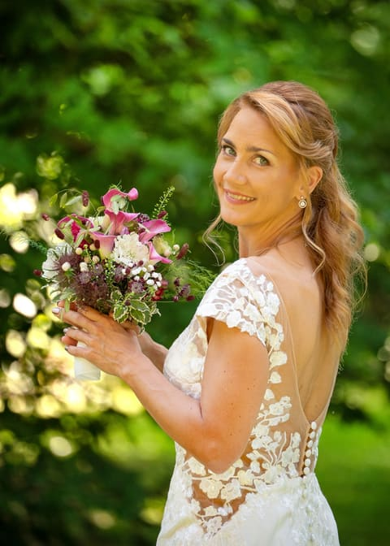
Für Frauen, die sich selbst in einem ästhetischen Licht sehen möchten. Mir ist wichtig, schöne Haut stilvoll und mit Respekt in Szene zu setzen, nicht mehr und nicht weniger.
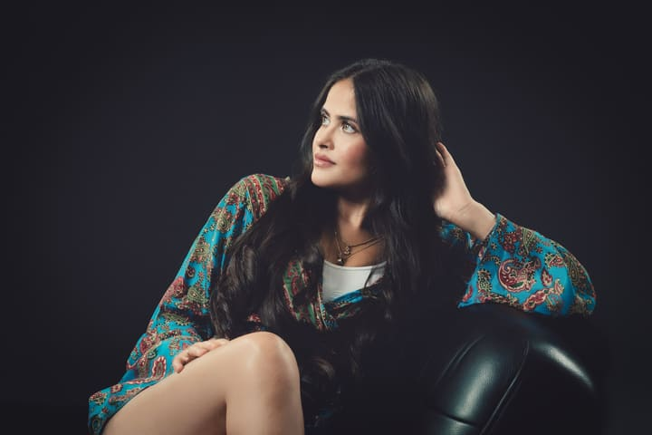
Für Menschen mit ihrem Tier, vor allem Hund und Herrchen oder Frauchen. Im Mittelpunkt stehen die Beziehung, die Liebe und der Spaß miteinander.
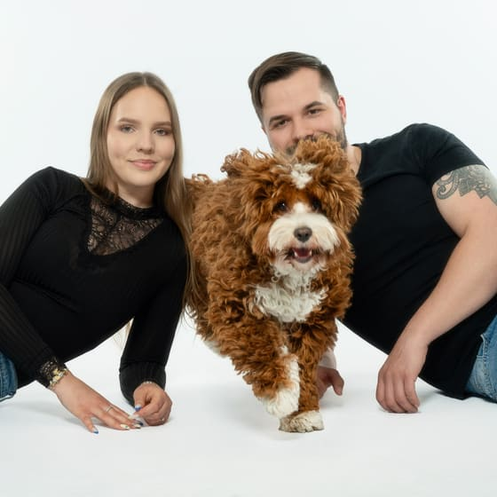
Für alle, die sich vor der Kamera nicht sicher fühlen. Bei mir ist genug Zeit, um Ihnen zu erklären, wie Sie stabil stehen und sich vorteilhaft positionieren, bis Sie sich wohlfühlen.
Passend zu Ihrem Ziel, zum Beispiel für eine Ausbildung oder für den nächsten Karriereschritt auf einer höheren Position. Wir stimmen Look und Ausdruck darauf ab.
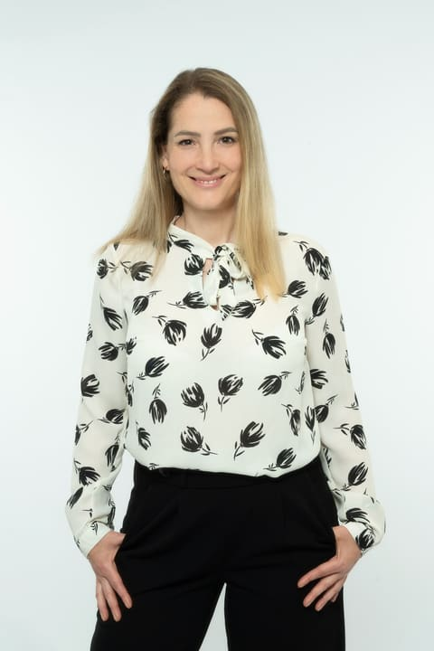
Passfotos und Bewerbungsfotos: Wählen Sie Ihren Termin direkt online aus.
ab 25 €
Termin buchenab 45 €
Termin buchen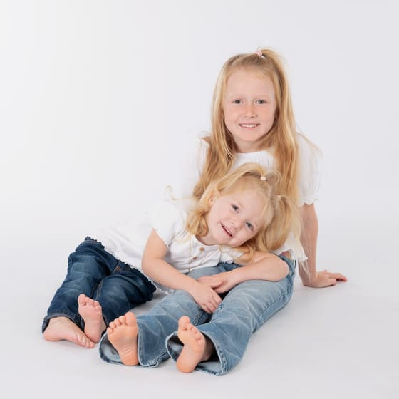
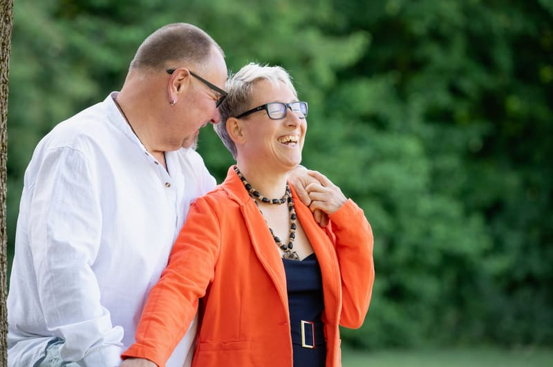
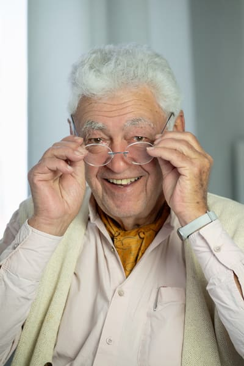
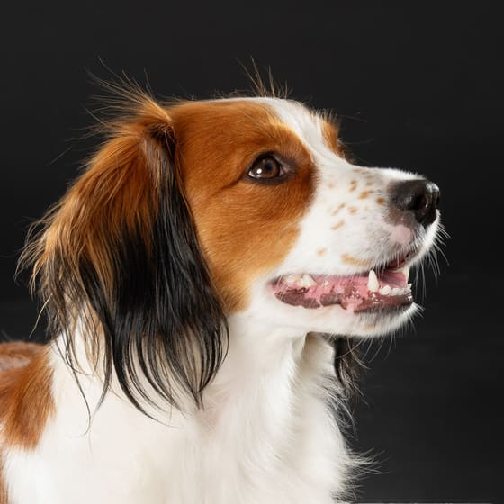
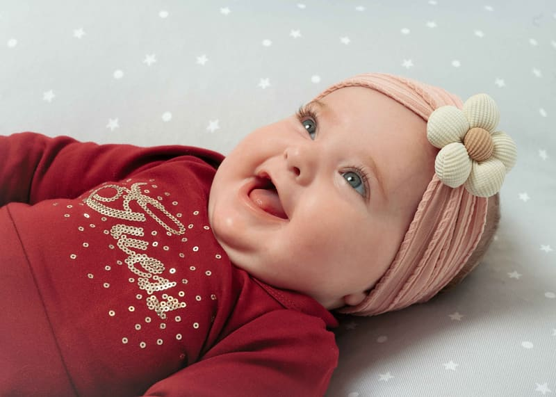
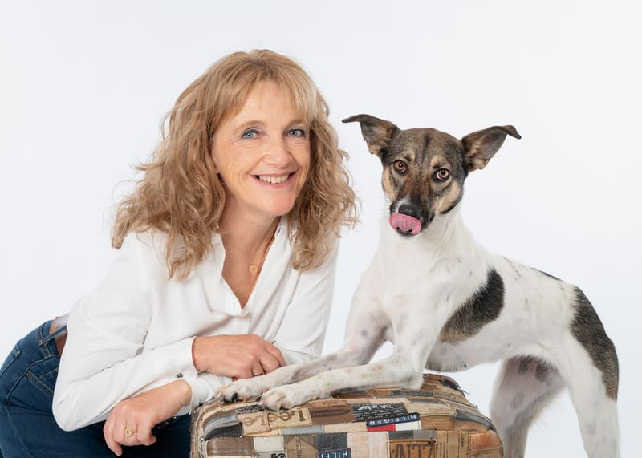
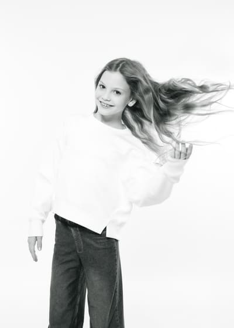
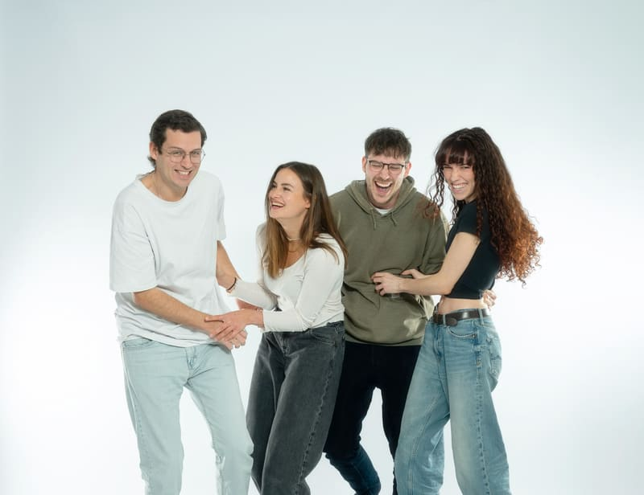
Fotografenmeisterin
Viele, die sich sonst nicht gern fotografieren lassen, sind am Ende überrascht, wie schön ihre Bilder geworden sind. Viele Familien begleite ich seit Jahren, vom Babybauch über die Einschulung bis zur Hochzeit.
Über michTermine nach Vereinbarung
Termin buchen